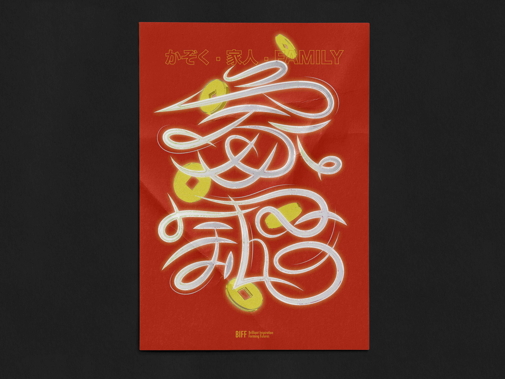
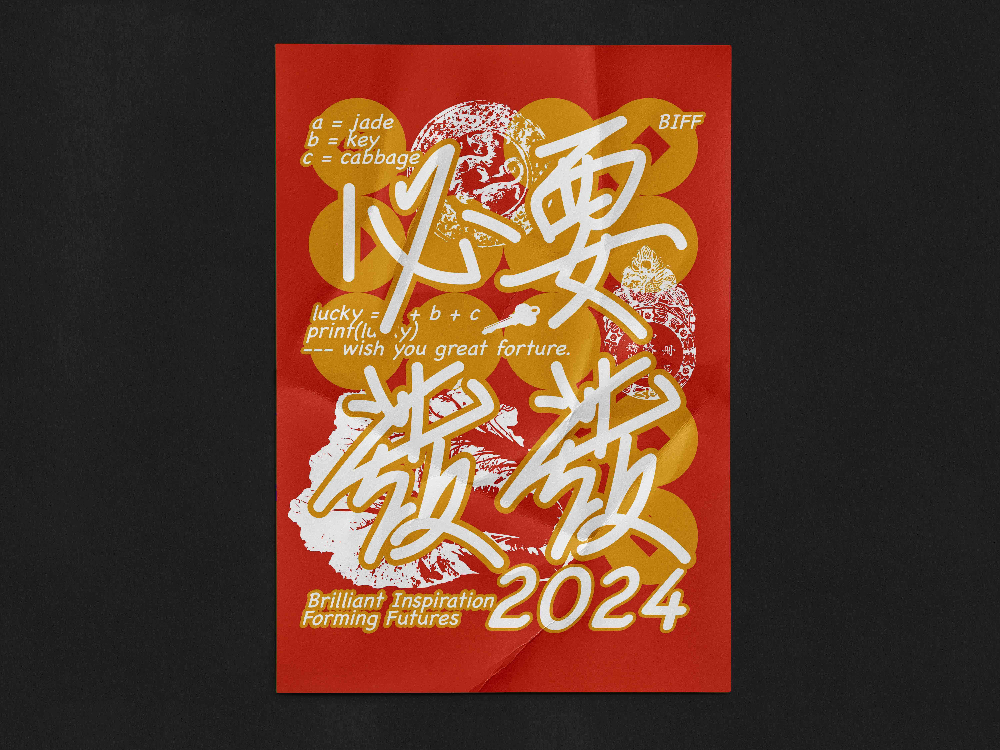
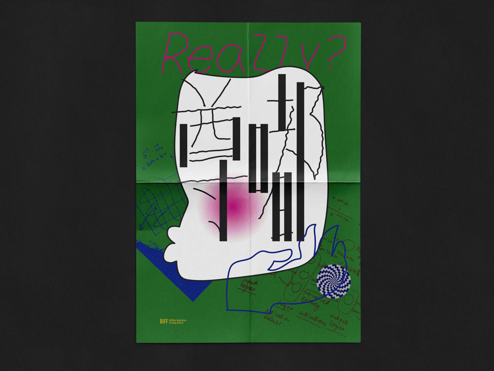
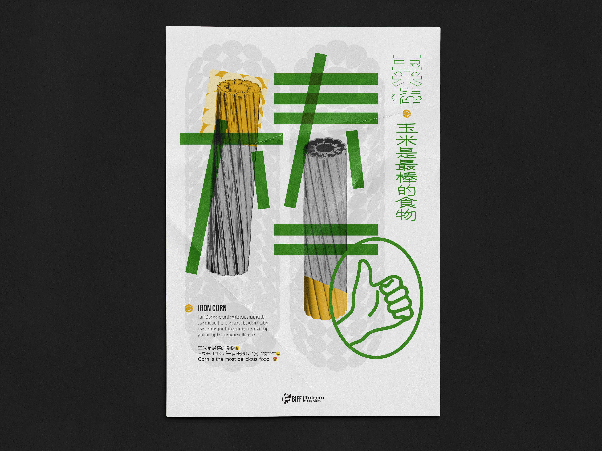
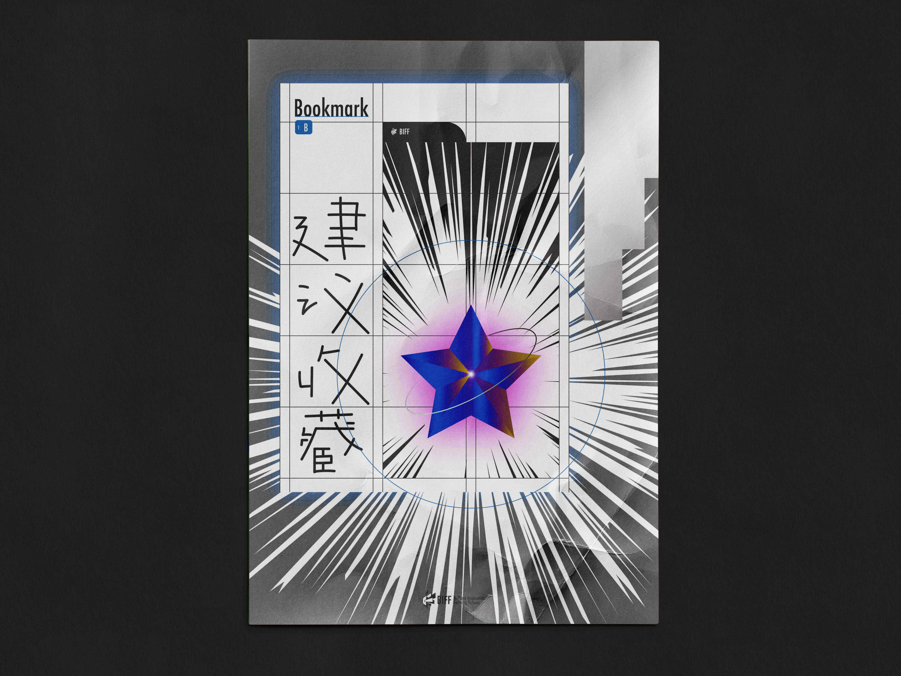
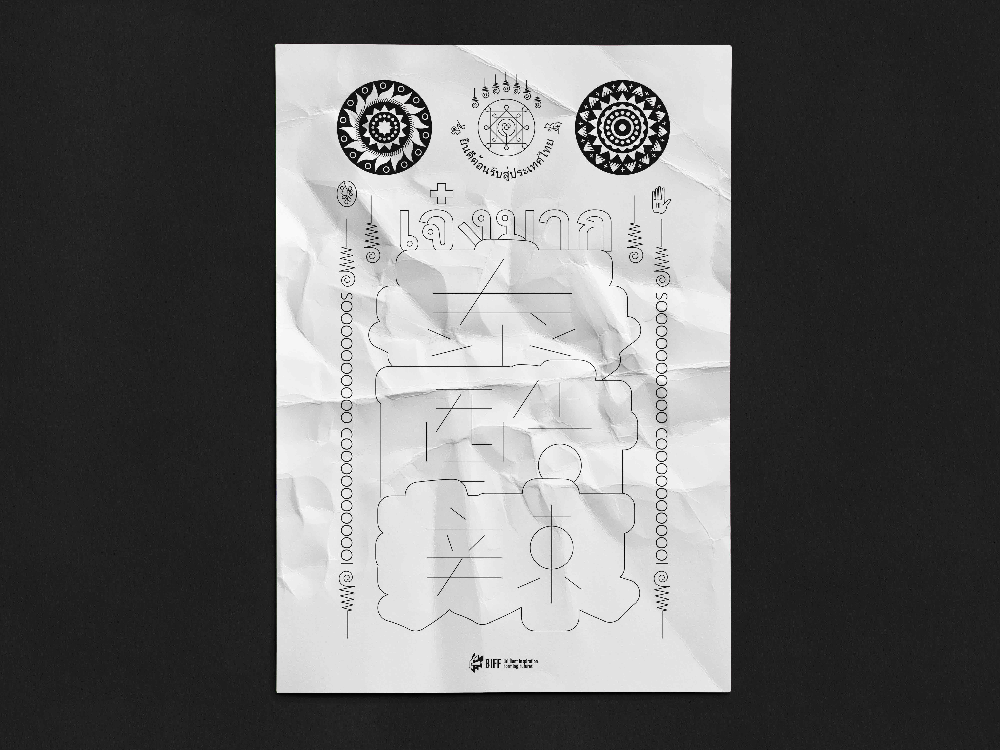

Visual Experiments in the Language of Chinese Characters
This project explores the visual potential of Chinese characters as carriers of contemporary
language and culture. Created as part of the BIFF design collective at Tsinghua University, the
poster series transforms trending phrases from everyday speech into expressive typographic
illustrations.
Each poster centers on a set of popular Chinese characters, visually translating their tone and
context.The project engages with the intersection of linguistics,
design, and social sentiment, offering a bold and experimental approach to typographic visual
culture.